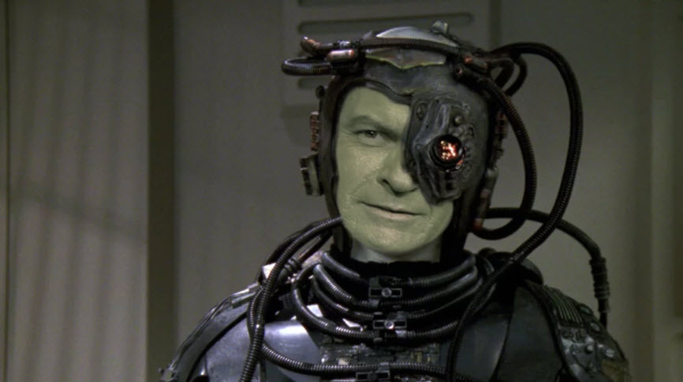
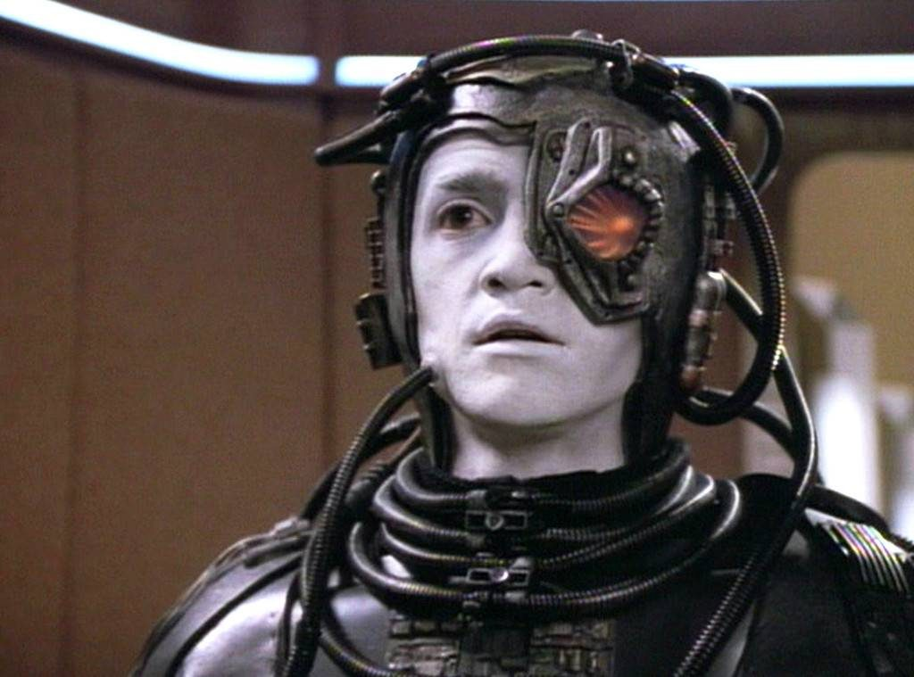
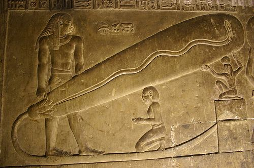
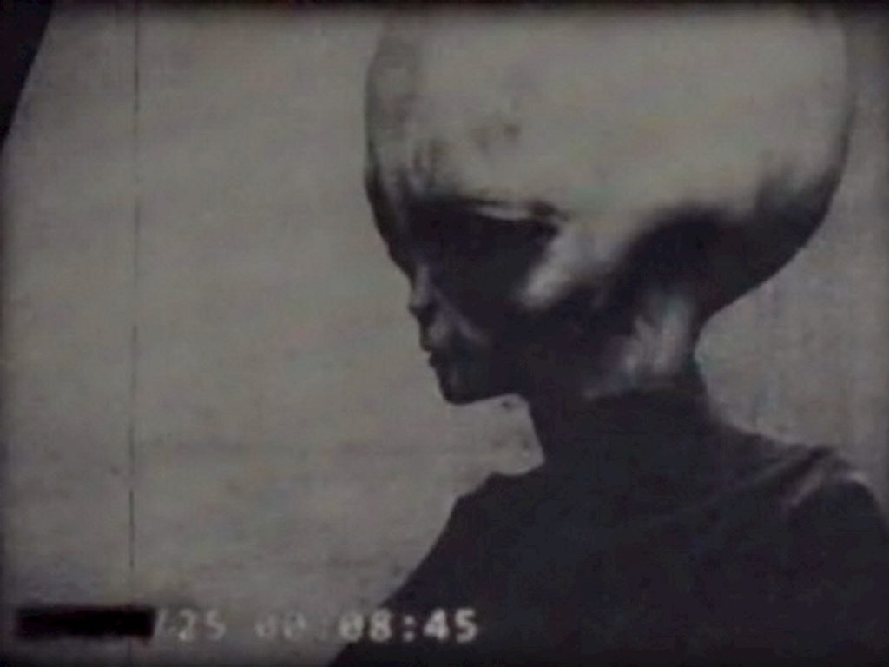
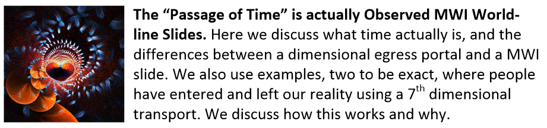

I have been in contact and often hold discussions with influencers. Here is one such series of the discussions. It is of course, in the form of questions being answered by myself. Perhaps, I think, you the reader, might find this to be of interest.
I have kept the influencer’s name confidential, and no attribution other than that knowledge is provided.
First Question
What’s Catholic Church have to w this, why hands off by EBs?
I was raised as a Catholic. Yet, all of my (MAJestic) experiences were devoid of any direct references to any specific types of religions, icons, or particular dogma or teachings. That being said, I can make a few observations that you might find curious. These statements should be considered as “profound” and not, at all, trivial.
- Humans have a need for ritual. Rituals work on a very important level.
- The
level that rituals work upon is NOT part of the physical brain. It is a
quantum field that is associated with the physical brain. Let’s just
simply refer to it as “sub-level”. That is because there is absolutely
no English name for this condition. Nor am I aware of any name in other
religions, or in any of the sciences.
- This “sub-level” is an underlying quantum field that memories, and thoughts are empowered by.
- The area of the mind (not the brain) that is influenced by ritual ALSO influences the reality that surrounds us.
- Thus, rituals affect memories and thoughts.
- Memories and thoughts influence our reality.
That being said, let’s now consider other entities that exist in our universe.
- Other entities also work on this “sub-level”.
- Many of them are more “attuned” or more “in touch” with how to interact with the “sub-level”.
- Being so skilled, they can easily communicate with others of the same species. We might consider it telepathy.
- It is rather easy for other entities to communicate with humans if they are “attuned” or accustomed to the “sub-level”.
- Because of a lack of vocabulary, such communication can be misinterpreted by others.
Thus, it is entirely possible that Catholic Saints or other devoted individuals have gotten in touch with their “sub-level”. As such, they could have easily communicated with others… been “inspired” by others… been “influenced” by others, and also been able to create a local environment where things can manifest at will. With this understood, a person or creature communicating at this level, would not at all need physical proofs for others to recognize. Though, it might be desirable.
Second Question
I guess that I didn’t answer the question properly. Thus, I ended up getting a secondary question. I guess that he wanted to understand why extraterrestrial beings would act or behave like they do. What are their motivations?
My question involves your statement that the benefactors have been told “hands off the Catholic Church”. Can you please expound on this prohibition and by whom?
There is a hierarchy of species in our “neck of the woods”. Some are very technically advanced, and occupy the physical, and others are very ancient and occupy a different KIND of reality. One in which Heaven and physical Earth are pretty much the same to them.
There is a group of entities that help police this sentience nursery that we are a part of. These are those “little green men” or Zeta’s that everyone “knows” about. But they are actually one species that uses physical bodies like clothing and are very busy policing our world. They are very old and have been involved with the evolution of humans for many, many years. Easily 30,000 or 40,000 more years. They zip about in these craft that can be hidden from human eyesight. They monitor for biological threats to our environment, make sure that we avoid nuclear war, and do everything that they can to influence sentience evolution.
They are a “service for self” species. So, it would be their preference if humans also evolved to be “service to self”.
Yet, as advanced as they are, they are only “worker bees”. They are a species that provides the task of monitoring this sentience nursery. Just like they are monitoring the other sentience nurseries in our general geographic region of space.
I do not know WHY they have this role. I do not know WHAT benefit they get from doing this. I strongly suspect that they have manipulated themselves into this position.
They believe that by assisting in the sentience evolution of humans, that they might be able to eventually assimilate the various “service for self” entities into their collective. (Sounds like a Star Trek theme.Eh?) And their species would grow proportionally. This would be true no matter what direction the human species evolves into.

When a “service to self” entity or species evolves, they also tend to evolve their mind, their physical body, their technology and eventually they tinker with their soul construction, thus affecting their consciousnesses. First they tend to alter DNA at birth to prevent birth defects and illness. Then they do so to improve the child; make them smarter, more attractive, and so forth. Then the species collectively make rules for the modification of DNA, eventually leading to whole-scale DNA alteration of the entire species. Over all, they constantly tinker and improve, over and over again over the centuries.
This tinkering will only take them so far. They will become masters of the physical universe, but will forever be chained to it. Thus, for a “service to self” entity, their sentience evolution eventually becomes a “dead end”.
Now… There are other species, much much older that have evolved PAST the physical environment. They are truly multi-dimensional entities. There is one such species that I am very involved with. They are an invertebrate, multidimensional species. That are working towards human sentience evolution.
They have manipulated (or tasked, I don’t know) the other Grey’s to monitor this physical environment for them. While they are involved in much more detailed activities.
This other species are way, way, WAY more advanced than the Grey’s are.
They are the ones that are cultivating the human species. Not the Greys. They want the human species ( I strongly believe) to follow their path. They want the human species to evolve towards a multi-dimensional species like they are. It is a great path, and not as limiting as the “service to self” path is. To do this, humans need to evolve towards a “service to others” inclination.
I guess, that you could call this species “angels”. It’s a very apt term, on many levels.
Using the “back plane” they can communicate directly humans on an individual basis. However the situation and the circumstances needs to be correct. Humans require [1] ritual and [2] certain conditions to become open and receptive.
Humans require ritual and certain other conditions to be able to communicate with any inter-dimensional species though use of the "back plane".
There are numerous religions that provide these opportunities for direct communication. Though many of the humans would not recognize the communication. Most think it is their imagination, or that they had a “hunch”, or that they were “directed” to act in a certain way.
- Having a “vision”
- Getting a “hunch”.
- Having a “gut feeling”.
- Having a “nudge”
But when in that environment, they can more easily “link up” with this entity or entities. The entity would help and assist them on a personal level towards a more direct “service to others” sentience.
The Catholic Church, for all the scandals and all the past misdeeds, is one such environment. It’s perhaps the biggest and most important environment for this communication. (It’s not the only one. Mind you. It’s just the best.) The channels are there. Everything that you need is there. (So you need to ignore it’s faults and misdeeds. You need to focus on the message and the environment that it is given in.)
This “Angel” species has set things in motion such that no matter what the worker Grey’s do, this most fundamental means of communication be open for those individuals whom wish to follow the path towards “service to others” spiritual sentience evolution.
Yes. The Catholic Church is “hands off” to any of the Grey species.
Third Question – In multiple parts
So there are two races of “grays”, one essentially good and one essentially bad?
No. There is one race of “greys” (that I know of).
They have different bodies that look, to us humans, as different species. There are short greys, tall greys, fat greys, skinny and ugly greys, etc. They are all part of the same hive soul construct. They all share the same consciousness, in quite a bit different way that we have individual consciousnesses.
They work with emerging species, and those that show a “service for self” sentience, they assimilate into their “collective”. The species then is overwhelmed by their technology, and is absorbed into the “hive”.
Once they join, the consciousness segments can move in and out of any physical body within the collective. One minute you have the body of a pilot of a “flying saucer” and the next minute you have the body of a laborer in a dome on the moon. It’s sort of like that.
They are neither good, nor bad. They are neutral.
The old video image (of an “Eban”) you feature in one of your articles are which kind (I’m guessing good)?
The video image is of a type-1 grey “pilot”. It’s a recovered member of a crew that operates an observation / interdiction vehicle. I do not know anything else about this individual except from scant knowledge regarding the movies that were recorded of it.
I have never experienced any malevolence by these creatures in any way. For the most part, they remind me of the neighborhood vet that I would take my pets to. Friendly but not close, professional and skilled, but serious.
I understand the “Eban” reference and the Stitchen references. However, I can not confirm nor deny any association. I just do not know. What I do know is from things that I just cannot talk about, and at that, it is just very scant. Sorry.
For your purposes you can consider the “eban” to be the same as my Type-1 grey.
Are the two grays from a similar lineage or entirely different one?
They share the same soul. They both have segmented consciousnesses, and they same the same technology. Their DNA is similar but NOT identical.
They are just like the science fiction television show Star Trek with the “Borg”. (I have often suspected that the media somehow taps into the unconsciousness, or is driven by MAJestic to provide information to Americans in a way that is disguised as fictional adventures.)

You know how the “Borg” goes about and “assimilates” other species? Well, in real life, it’s like that. Only they just don’t assimilate an entire species. What they do is integrate species members that have a soul configuration that matches their own. This is [1] a “service to self” sentience. This is also [2] a “Service for another” sentience.
Both (of these two types of) human sentience’s are easily converted or absorbed into the Grey core “collective.
The “service for others” sentience is a harder path, but leads to a far greater growth and evolutionary track. Which is why the “Angelics” (the other species that I mentioned that is invertebrate) wants humans to follow.
Have you read or been told about any of the past 30k years in earth history? I’m guessing our “history” is completely bass-ackwards-wrong?
I do know of some of the history. What I do know is in fragmented answers. I was never given a formal briefing, as it was always expected that I would be told just what I needed to accomplish my tasks and no more.
I am aware that others in MAJestic have tried to map out some sort of history track. I am also aware that they have done so in various papers and that they have used some type of extraterrestrial technology to access it. I have heard from non-MAJestic sources that this is in the form of a “yellow book”. I don’t know anything about that. What I do know is that there is a complete historical record available to certain elements of MAJestic and this is in the form of an extraterrestrial artifact.
Unfortunately, as far as I know, the MAJestic investigative staff have been unable to properly search and index using that technology. (I know why, but no one ever asked me for my help.)
Much of the problem has to do with the problem with vector time. We humans treat time as a one-way vector. We measure it as our consciousness moves in and out of different (adjacent) realities. So we think, incorrectly, that time is a one-way vector and that the past is the past and that it is “carved in stone”. But that is not how the universe works.
Each reality has it’s own past history.
Each past history is different from reality to reality. So, to put it in another way, the past can be changed. It is NOT fixed. To read and measure and learn from the past, you need to target a fixed segment vector and “lock it down”.
Thus the reason why the staff cannot index or jump-search using extraterrestrial technology. Is that the moment they try to index, the reality switches, and a new past reality materializes. (Even if the difference in the reality is a fleck of dust on a lampshade.)
The history that I know of goes back far…far back…way back to a time long before there were dinosaurs.
What would be some significant past earthly historical events that nobody has ever heard of?
There are all sorts of interesting stories. Some involve extraterrestrials, but many do not.
For instance, did you know that the ancient Egyptians used DC electricity? Who would figure, eh? They used it for [1] electroplating, [2] primitive illumination, [3] impressive displays of power with ruler staffs, and [4] certain medicinal techniques and preparations.

I know that it is hard to believe, but there is a contingent of people who believe that the Egyptians had crystal power that had all these magical properties. Well, I hate to rain on your parade, but they didn’t have this ability as far as I know.
However, they did actually harness DC power and had batteries and used copper conductive cables to move the electricity about. They were quite an amazing people.
They built the pyramids using fluid buoyancy. (This is very similar to the Chris Masseys theory of construction.) A huge lake was constructed. Dressed stones were transported to the build site using rafts, and leveled using the water table. There were no slaves, or ramps with slave-supervision and whips.
More about the method of shipment of the blocks to the build site can be found HERE. I suppose that we are supposed to believe that after transporting them by boat, then would remove them off the boat, and then push them up earthen ramps to the top of the Pyramids, eh?
Once the building was completed the lake was mostly drained and existed as a reflection pool that surrounded all of the structures there. There were walkways or causeways that went from the edge of the reflection pool to the pyramids, and important people would use these for their own purposes and rituals.
The pyramids were impressive in their day. They were sheathed in well-cut stone that reflected light and emitted heat at sunset much like Ayers Rock does today! At the top of each pyramid was an impressive metallic iron capstone with carvings of special significance. Oh, and as far as I understand, whatever the purpose of the Great Pyramid was, it wasn’t as a tomb. It was for something else.
At the time of construction, the pyramids were at the center of a very lush and tropical area. The Nile would raise and lower, but there weren’t the surrounding deserts like we see today. Instead they consisted of lightly forested areas, fields, and were flush with wildlife of all sorts. The Egyptian people were a very religious people, but their religion did not resemble anything like what contemporaneous Egyptian scholars suppose.
Egypt existed as a significant cultural center at that time. They are older than we contemporaneously give them credit for, but not as old as Graham Hancock and his followers wish to believe. Egyptian history is far more colorful and complex than the Egyptian histories let on.
Their ships traveled to both Australia, and to the Americas. But, as far as I know they never integrated or settled with the populations there. Though, they have most certainly influenced them.
And don’t even get me started on the stone softening techniques of South America…
You mention “The Journey to Serpo” but sounds like you don’t believe the story (I have found some corroboration through).
I do not believe it because I do not know the entire story. What I have read is wholly at odd with my own experiences, so I have (perhaps wrongly) discounted the narrative.
Remember that my experiences are completely different.
That being said, I will never say that someone did not experience what they claim to have experienced. Everyone’s experience is unique to themselves. So, to better frame things, it is possible that what is said about Serpo is true, it’s just that I have no comparative similar attributes that I can relate to.
It’s possible there are different elements of their culture just like here, right? So maybe the “worker bees” are vacant nerds but maybe not the ones of their home worlds?
Yes that is possible. But, I do not know.
In regards to the type-1 greys, they are a very effective bunch. They know what they need to do and do it. They do not mess around. I have no idea what they do for recreation.

I have no idea if they value art, beauty, smells, scents, visual or musical art or anything similar. Yet, it is certain that somethings are important to them.
The impression that I get is that their personal enjoyment or motivations lie outside of the physical. Whether this is in their version of “Heaven”, or in their mind, or somewhere else physically.
The angelics are invertebrates you say? Like an octopus or more like an insect? So, they’re heroic but spineless huh, weird!
I know that this will freak you out. I am sorry, but you asked.
Well, you have heard about the Mantids? Eh? Well, that is pretty much what they are like. They are tall. They have wings. They have no bones, and a hard shell that looks like they wear a helmet on their head. They emit and radiate love, care and concern.
They evolved on Earth a long, long, long time ago.
(They are) Unlike the type-1 greys, that are space-faring entities. The angelics are multi-dimensional creatures that can traverse anywhere in the universe, but have a very special affinity for species on the Earth.
They care about humans very much, and are involved with humans on a personal individual basis. In fact, I would even go as far as to say that “guardian angels” are truly absolutely real.
Do the angelics believe in God or make any reference to a God?
Yes they do.
However, it is not a old aged human with a big white beard sitting on a throne near some pearly gates.
They are striving to get closer in their actions, by being more “service to another” sentience. They believe that the more they strive to help others, the better their soul configuration realigns with the true purpose of the universe. Thus, they get closer to their purpose of being, and closer to God by helping others.
They believe that by helping humans on this path, that we will get closer to God ourselves. Personally, I think that they are correct.
Do they still have a body or have they moved onto pure conscientiousness? What do they look like?
They are multidimensional beings.
We can see them under certain circumstances. If you take an overdose of MDA (for some reason) you can see your very own guardian angel. It is a very short visit and vision, but if it is important to you it is possible to do so.
They do look like a big insect. They are much taller than us humans and you need to look up to see their face. I would gather that they stand a full 18 inches taller than humans. They do have a triangular head. They have wings.
They do not look hideous however, and I have no idea why that is the case. I, for one, are horrified by insects, but they do not trigger any revulsion at all.
Do they also regard us as “property”?
No. They view us as their “children” that need to be protected, and taught how to grow and learn.
Fourth Question
I always thought I had a pretty good grasp on soul and conscience but I guess not, can you please expound on them some more?
I actually wrote some posts on this subject. But, here is the five cent overview. A soul is a collection of (inter-dimensional) quanta. They are “associated” together using a kind of “glue”. The “glue” that keeps them together are [1] thoughts, [2] actions, [3] intentions, and [4] associations. They do not reside within the physical. They reside all over the place, but they all all associated with each other.
At some point in time (not that time exists, mind you), but “eventually” somehow, somewhere the soul starts to obtain “self realization”. And with “self realization” (I exist because I think I exist) comes the formation of consciousness. Once this happens, consciousness realizes that the soul from whence it originates from, can grow and be “improved”. It discovers that it can improve its soul through conscious thought.
Initially, it starts to improve itself, and quickly it starts to meet other souls that are also similar to it. They learn from each other. Eventually, they realize that they can improve their soul structures by obtaining experiences. Experiences are thoughts + actions. But soul is existing in a point of “Heaven”. It’s difficult to modify the soul in any way other than thought. So an environment needs to be created from which to learn and grow from.
Yes, an entire universe (several actually) were created by our “human” souls. Each universe is in it’s entirety. From birth to death. Many trillions of trillions of trillions of years of existence. It exists there with each possible world-line variation of that universe available to the soul.
The soul then can take it’s consciousness, or create another (a soul can create and use multiple consciousnesses) and place it within one of the moments of time in that universe. Now, time is a funky thing. It is not what we think it is. It is a momentary instant. I call this a bubble. Time is our consciousness moving with the created universe from moment to moment. Or, in my terminology, from instant to instant. Thus, we (our consciousness) experiences this movement within this universe as an arrow; an arrow of time.
Fun fact; the rate of movement from moment to moment is the speed at which our brain processes thought. Now, that varies from person to person, and from instance to instance. So the apparent "arrow of time" is unique from individual to individual.
As our consciousness moves though our reality, it actuates the body that it occupies. This cause thoughts, dreams, hopes, fears, and physical actions which result in “situations” that need to be resolved.
Everything that occurs in the physical bubble of reality builds upon the structure of soul. In fact, if you look at it directly, our physical actions are actually shaping our soul. As we shape our soul, we give it abilities and help it to grow in certain directions.
Souls can grow and advance, and as it grows, it can develop new structures, new associations, new constructions, and new shapes. In a soul, this is much more than appearance. It is the creation of new abilities. The soul can develop into another soul form or shape. A soul can begin as a tiny thing. Maybe nothing more than useful than a stone, a rock or a pebble.
Eventually it can obtain consciousness and become a germ, a fly or a tiny microbe. Given many millions of life and death cycles, it can further grow into a shape that could master a “lower form” animal. Like a dog, a cat, or a human.
Further, by controlling experiences, it can grow into a greater being like an angel or something bigger and better, or stronger.
The type-1 greys have all mastered their soul configuration for control of their life within this universe. They are highly technically advanced. But they cannot become a trans-dimensional being. Their soul growth and advancement is limited where they are now. The only way now for them to grow further is to disassemble this enormous soul construct that they have worked millions of years to create. That is not going to happen, so their soul construct and advancement is at a dead end. All they can do is expand the size of the soul, and develop other attributes and skills. However, inter-dimensional soul ability is denied them.
The Mantids, on the other hand have transcended this situation. Their soul is lighter, freer, less ‘solid” and complex
Us humans can establish a soul configuration in any direction. In fact, that is what is going on now (within the next five centuries or so) is the direction of soul selection and development of most of mankind. This is firstly determined by sentience selection. As there (for the most part) are three sentience’s that we can gravitate to. These choices will determine how our soul develops by our actions on this planet (bubble of reality).
- Service to self
- Service to another
- Service for others
You’re the first one to mention the Mantids as our benefactors and not as a force of evil. I for one have always liked insects including praying mantis (but not arachnids), however an 8′ one would freak me out! Have you ever seen one up close? Do they have a smell? Are they from this galaxy? Can they still fly?
The Mantids is the species that I am very, very familiar with. They are the ones that I am connected to, and from which I was selected to be associated with.
If the base commander would have told me and Sebastian that we would be integrated with giant insects we would have gone running away and AWOL faster than a pig on fire. I have always thought insects were horrible. The only ones I actually had any affection towards were ladybugs and bees, and at that, I was always fearful of bees
I am sure that there are many different insect-appearing species all over the universe. The species that I am knowledgeable of is the “giant praying mantis” type that I have mentioned previously.
They apparently evolved on our very own Earth. Yes, it seems really impossible, but they most certainly did. They evolved into thinking and tool-creating creatures during the Devonian period more or less. That’s a long long time ago. Maybe from 350 to 400 million years ago.
Eventually, they were able to transcend the physical reality. They did this after about 75 million years of physical existence. (These are all rough guesstimates as no one has ever set me down and pointed out the exact dates, as they vary from MWI to MWI world-line.)
I wish I could answer what they smell like. I don’t know. My association with them is via a mechanism; and artifice. It enables me to have a link with them (in certain very, very limited ways).
The traffic on the link is one way…to them. Dual feedback to me, for my understanding is tangential. I can pick up what is going on as an observer. Much of which I couldn’t make out for the longest time. Over time, my brain adapted and I could better understand things. (The brain self-learns and adapts. Really, I would have never expected that. ) I could ask questions of a sort, and understandings would be generated.
This EBP is their direct link to them, and the ELF probes enabled MAJestic to tap into what was going on. My training with the ELF probes provided me with insight, and I was able to self-calibrate during my retirement sequence, thus opening up access to the EBP data stream. Today, how the world around me looks is quite different than it did when I first joined the Navy
There is a old science fiction movie called “They Live”. In the movie, there was a pair of glasses that you could put on that would let you see the world as it really was. Well, it’s kind…kind… of like that.
Where before my operation, I would see but one simple reality moment to moment, today, I see various moments moving about, jumping about, frittering about all the time, then they sort of “freeze” in place momentarily as my thoughts solidity. (Yeah I know it’s strange.)
Well, on top of that new reality that I endure, I now have “channels”. Sort of like how there used to be VHF and UHF dials on the old analog television screens. I can “focus” on what I can view and (sort of) “switch channels”.
Anyways, the reality that we (as normal humans) see is really not the true reality at all. It is a a specially selected reality that our consciousness uses to occupy a given reality. It is kept simple for purposes of function. Thoughts and actions arrange soul constructs. Simple results from simple cause and effect actions
Now, back to the Mantids. Once you can “pull the curtain” away and see what is going on behind the scenes, you can see the background activity.
They rarely materialize in the physical, though I do have some GIF’s and JPG’s of a Mantid moving across a parking lot caught on a security camera. They are busy assisting individual humans in various ways.
If I switch to another visual channel I can see them quite clearly. Though I usually only see one at a time. I have never seen them in groups. They do have assistants. The assistants on my “UHF” channel are not type-1 greys they are something else.
I can tell you what they look like. I can describe how they appear to me.
The EBP is mostly a visual device with thought conveyance...i.e. most humans ONLY think visually. Few think in terms of smells, tastes and tactile abilities. When was the last time you tasted anything in your dreams?
I can communicate how I feel around them; about them; and their emotions and thoughts toward me. However, that’s about the extent of my skill set.
I don’t think that they can fly. But that is because I never saw them unfurl their wings, so I just assume that they never use that ability. Honestly, I think that I would be scared shitless if they did so in front of me.
BTW, they are very attuned to my emotions and are as innocuous as possible when dealing with me. This is going to sound strange, but when I see them, I don’t “see” them. I mean that I visually can see them, and my eyes registers how they appear, but my thoughts and feelings are filled with love and concern to such an extent that it drowns out any revision that I might otherwise have towards them.
I was going to ask about some corroboration but after reading your description of Government building linoleum, furniture and piled up decades of old old projects, BLUF, I knew you were talking straight up shit. My first desk was one of those “Government Standard” dark gray desks w the rubber writing surface from the 40s that weighed 300 pounds, they were sure better than the IKEA like stuff they give us today.
I’ve got some MRI scans of my brain gathering dust somewhere. You can easily see the probes there. When the doctor imaged this he asked me if I was ever shot at with a BB gun when I was a little child. (At the time, I was having headaches, and so I went to a hospital to see if I had any problems. It turned out that the headaches were from stress by a terrible manager at a horrible job.) So that is how I got an MRI to see what is in my skull.
You can see the triangular chiseled feducal features in various government buildings if you know where to look.
I’ve got a paper trail from the IRS and the USPS that specifies all the places where I lived. A novice wouldn’t be able to make out much from it, but it clearly shows that I traveled all over the nation working in high-end technical fields and suddenly having to move to another part of the nation. This is not normal. No matter how you look at it.
My degrees are there. It’s pretty difficult to fake a BS in Aerospace / Mechanical Engineering. My Navy paperwork is there. My retirement dates are all verifiable. All my patents are public record.
You can argue that it is all coincidence. Just like a type-1 grey would land their disk-shaped vehicle on the white house lawn, and the UFO skeptics would say that it didn’t happen.
Just like CNN is now arguing that the Miller investigation against Trump was not conclusive. In this world you either believe things or not. If pizza is delicious, then it is good. If you don’t like pizza then it is bad. That is the way everything is in this world.
It’s nice that you maybe you can get something out of my experiences. I hope that it helps you in some great and profound way. Just keep in mind that my ability to freely talk and discuss is at the discretion of others. This can certainly be terminated by request, and I would absolutely honor any such request.
BTW, I don’t want to join the Gray-Borg collective!
Good for you! It is a wise choice my friend. Believe me in that.
Here are some pictures of a bunch of “service for another” sentience. They think that they are protesting. They believe that they are influencing others. They believe that they are doing what their “consciousness” tells them.
But in truth, what they are being is “serving another person”. They are pawns in a large political game, and their actions betray define their sentience.
Another Question…
This question started with a complaint that many of my blog links didn’t work. The WordPress that I used changed their system, and orphaned a ton load of my internal links. Ugh!
Those 4 links still don’t work for me, if you want to bury them in an email, I’ll drop a coin in your can 😉
Just click on this link:
https://metallicman.com/majestic-related-index/
All of the links should work now. I just tested it out. What happens is that your browser might not reload a new page. Instead it will just access a (old) page in cache memory. Here are some links that should work now;


And while you didn’t mention it, these were also broken links. All are very good reads.


Then the influencer went straight to the the subject, referring to the last series of responses.
The discussion on soul and conscience is deep, beyond Cartesian cogito by light years. It requires many re-reads to take in, I expected that our simple model was wrong, but it’s really-REALLY wrong!
Yeah, I appreciate that you understand what I am trying to relate.
You know, that was part of my role by MAJestic; To collect what I could from the Mantids through this technology, and then disseminate it.
Too bad that my role in MAJestic is all shut-down and there just isn’t anyone left to document what I have to relate.
So this is why the blog exists. Meanwhile the rest of the world is trying to grapple with really old and odd concepts and trying to fit new discoveries in a model that just won’t even accept them
This knowledge describes what time actually is. What the universe actually is, and how it is constructed. It describes how soul works and why consciousness exists and how it interfaces.
Unlike other people talking about their channeled knowledge from the “enlightened ones”, I talk about ψ-ontic realities and the practical applications of it as far as our scientific study is concerned;

This post (above) describes the “threshold” or borderline between what we can control in our universe by thought, and what is beyond our control. It’s not your everyday “oh, I saw a UFO and they told me to be kind to my fellow man.” typical post.
Here’s a great post with a lousy title. It discusses what time actually is, and how people can use 5th or 7th dimensional travel to enter or leave our “bubble” of reality easily. Make sure that you are able to view the videos and the GIF’s. Reload the browser as necessary. They show actual examples that fit into my narrative, but are dismissed as hoaxes as they fail to fit into any conventional narrative of what reality is.

The mantids are earthlings huh, that makes sense actually.
This is the truth, and it took me a while to get my hands around this concept. Their relationship with the rest of the Galaxy is a complex one and I do not know all that much in detail regarding it. But I can say a couple of things.
First of all, the Galaxy that we are in is a very mature, stable and well policed place. This is a narrative that is quite unlike what you will hear anyone else refer to. To everyone else, our Galaxy is a barren, empty place with planets just “ripe” for the pickings. Not so.
This is what I know about our Galaxy.
I refer to a species known as “The Progenitors”. They are NOT the Mantids, but they are similar to them in various ways. You can read more here;

Numerous species have evolved on the Earth, and moved on. I speak about one which I consider the “first” species that evolved into an approved sentience archetype (as defined by the Galactic “powers that be”). That is actually not — precisely — true. There are elements of Mantid and Cephalopod that overlap in certain areas. But, to keep everything simple, I just prefer to keep things boxed up in easy to understand bite-sized chunks.

Sometimes I am tasked with providing mathematical proofs as to show why I talk about the things like I do. Seriously? I have a life and you either believe what I have to relate or you don’t.
Anyways, I have always argued that all of our Newtonian science is based on observation. However, quantum physics clearly tells us that observation changes results. So this means that there should be violations of physical laws that would show us that our reality is based on quantum physics and not Newtonian physics. Here, I discuss this issue. It’s a technical post. I hope you like math…

Did they (the Mantids) task the Grays or is it a mutual relationship?
Oh boy oh, boy is this a great subject. I can answer that I don’t know for certain, but I have a very…very good idea of what is going on.
Firstly, any sentience that is “service for self” can only advance so far. No matter how technically advanced they appear, they always will suffer from limitations of the physical reality. That is the bane of their existence. While “service for others” sentience enables the thoughts to manifest in soul building exercises that are pure(r) and more “malleable”. It leads to multi-dimensional and trans-dimensional capabilities. They are abilities that are forever frozen and locked away from those hive and matrix souls that are fundamentally locked into “service for self” sentience’s.
Thus, the Mantids are far more capable in many many, many areas than the Greys.
I believe that the Greys think that they are working on the Earth in their own best interests. But it is the Mantids that have easily convinced them to feel this way.
Have you ever watched the movie “push“? Well, it really illustrates this point. There is a girl in the movie who has PSI / ESP powers that can “push” memories and thoughts into the heads and minds of others. She uses this to control those people. One minute they are a single child, and the next they have a memory where their (now) best friend killed their beloved sister. Thus causing the person to go and kill his best friend.
What about some other reported alien-earthlings like the Reptilians? Hollywood hints at these with the Sleestaks from “Land of the Lost” TV series (remember that on Saturday mornings)? If you read between the lines in Genesis, they pop out.
I am absolutely positive that there are other species of creatures. I do know for a fact that many have been documented by MAJestic, and that some do resemble reptilians in certain aspects.
However, they are not central to my mission objectives, nor were in my cone of experience, so I cannot say too much about them. This is because I really don’t know that much about them.
However, what I can say is that there is an internet presence that has gotten blown all out of proportion and it nowhere resembles the actually extent or role that these creatures have on this Earth.
MAJestic Related Posts – Training
These are posts and articles that revolve around how I was recruited for MAJestic and my training. Also discussed is the nature of secret programs. I really do not know why the organization was kept so secret. It really wasn’t because of any kind of military concern, and the technologies were way too involved for any kind of information transfer. The only conclusion that I can come to is that we were obligated to maintain secrecy at the behalf of our extraterrestrial benefactors.


MAJestic Related Posts – Our Universe
These particular posts are concerned about the universe that we are all part of. Being entangled as I was, and involved in the crazy things that I was, I was given some insight. This insight wasn’t anything super special. Rather it offered me perception along with advantage. Here, I try to impart some of that knowledge through discussion.
Enjoy.


MAJestic Related Posts – World-Line Travel
These posts are related to “reality slides”. Other more common terms are “world-line travel”, or the MWI. What people fail to grasp is that when a person has the ability to slide into a different reality (pass into a different world-line), they are able to “touch” Heaven to some extent. Here are posts that cover this topic.


John Titor Related Posts
Another person, collectively known by the identity of “John Titor” claimed to utilize world-line (MWI egress) travel to collect artifacts from the past. He is an interesting subject to discuss. Here we have multiple posts in this regard.
They are;